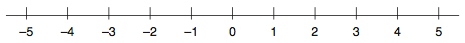
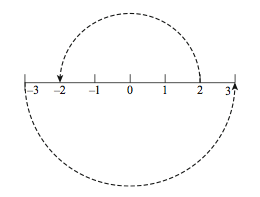

허수(Imaginary Number)의 기본 개념
Table of Contents
Mathmetics for Computer Graphics 라는 책을 보다가 허수에 대한 개념이 잘 설명되어 있는 것을 보고 기록해 둔다.
1 허수와 복소 평면
고등학교 수학에서는 단순히 -1의 제곱근을 허수라고 배웠다. 그리고 이차원 좌표계를 복소평면이라고 배웠는데, 이 두 개념이 어떻게 이어지는지에 대해서는 배운 기억이 없다.
2 The Number Line
복소수를 이해하기 위해 아래와 같이 좌우로 평행한 일차원 좌표계를 사용한다. 이 좌표계를 "Number Line" 이라고 부르자.

3 허수 i
복소수는 처리하기 곤란한 특정 타입의 방정식을 풀 수 있다. 예를 들어 \(x^2-4=0\) 이라는 방정식은 \(x=+2\) 로 풀린다. 하지만 \(x^2+4=0\) 은 실수해가 존재하지 않는다. 앞서 소개한 "Number Line" 은 두 번째 방정식을 풀기 위한 새로운 종류의 수 체계인 복소수(Complex Number)를 설명하는데 도움을 준다.

위 그림을 보면, "Number Line" 상의 모든 숫자는 반시계 방향으로 180° 회전을 통해 양수는 음수로, 음수는 양수로 부호값만 바뀐다. 그림의 예에서 보듯이 2가 180° 회전하여 -2가 되고, -3은 3이 된다.
즉, \(-2 = -1 \times 2\), \(3 = -1 \times -3\) 이렇게 표현할 수 있다. 여기서 -1은 180° 를 아주 멋지게 표현하게 되었다. 게다가 180° 는 90° 를 두 번 더한 값이다. 90° 의 회전이 "Number Line"에서 무엇을 나타내는지는 확실히 모르겠지만 이 연산을 \(i\) 라고 부르도록 한다.
따라서 \(2i\) 는 "Number Line"에서 2를 90° 회전시키고 이 좌표계에는 없는 어딘가(책에서는 limbo라고 표현함)에 두게 된다. 즉, 허수 i는 90° 회전이고 \(2ii\) 는 -2가 된다. 그러므로 \(2ii=-2\) 라고 쓸 수 있으며 이는 \(ii=-1\) 을 의미한다. 이쯤 되니 고등학교에서 배운 수식이 기억난다.
\begin{equation} i=\sqrt{-1} \end{equation}때문에 허수 \(i\) 는 숫자 보다는 연산자로 보는 게 적절하다. 반시계 방향으로 90° 회전하는 연산자인 것이다.
4 복소수
이렇듯 복소수는 실수와 허수의 조합으로 이루어진 수이며 실수해가 존재하지 않는 수학적 문제들을 해결할 수 있도록 해 준다. 복소수는 아래와 같이 나타낼 수 있다.
\begin{equation} z=a+bi \end{equation}5 References
- Mathmetics for Computer Graphics